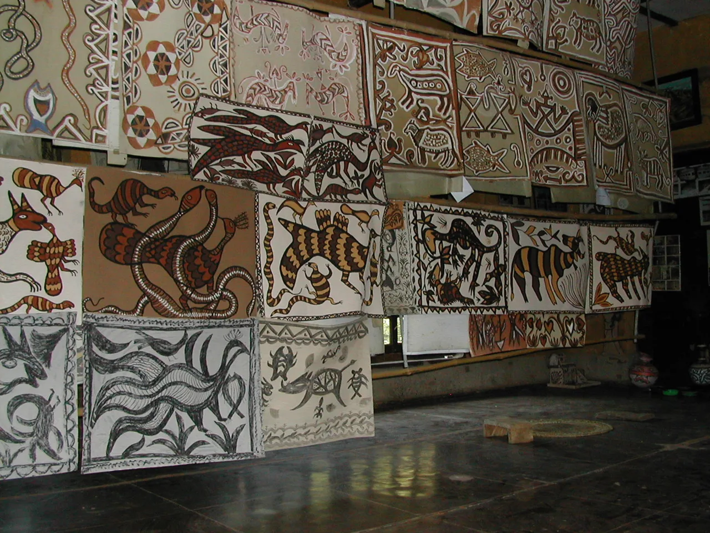

ইতিহাস ও পরিচয়History and identity
সাঁওতালরা দক্ষিণ এশিয়ার একটি বড় আদিবাসী জনগোষ্ঠী। বাংলাদেশে তাঁদের বসতি মূলত উত্তর-পশ্চিমাঞ্চলে। The Santal are one of South Asia's largest Indigenous peoples. In Bangladesh they live mainly in the north-west.
কারা সাঁওতালWho the Santal are
সাঁওতালরা দক্ষিণ এশিয়ার একটি আদিবাসী জনগোষ্ঠী। বাংলাদেশে তাঁদের বসতি মূলত উত্তর-পশ্চিমাঞ্চলে।11 ভারতের ঝাড়খণ্ড, পশ্চিমবঙ্গ ও পার্শ্ববর্তী অঞ্চলেও বড় সাঁওতাল জনগোষ্ঠী রয়েছে।2 The Santal are an Indigenous people of South Asia. In Bangladesh their settlements are concentrated in the north-west.11 Large Santal communities also live in Jharkhand, West Bengal and neighbouring regions of India.2
২০২২ সালের জনশুমারির প্রাথমিক প্রতিবেদন অনুযায়ী বাংলাদেশে সাঁওতাল জনসংখ্যা ১,২৯,০৪৯। ২৫ জুন ২০২৬ সংসদে এই তথ্য জানানো হয়। এটি জনশুমারিতে গণনা করা সংখ্যা।9 The preliminary 2022 census counted 129,049 Santals in Bangladesh. The figure was reported to Parliament on 25 June 2026. It is a census count.9
সাঁওতাল হুল, ১৮৫৫The Santal Hool, 1855
১৮৫৫ সালে সিধু ও কানু মুর্মুর নেতৃত্বে সাঁওতাল হুল সংঘটিত হয়। ভগনাডিহি গ্রামের চার ভাই — সিধু, কানু, চাঁদ ও ভৈরব — এই বিদ্রোহের নেতৃত্ব দেন।2 The Santal Hool of 1855 was led by Sidhu and Kanhu Murmu. Four brothers from the village of Bhognadih — Sidhu, Kanhu, Chand and Bhairav — led the revolt.2
জমিদার, মহাজন ও ঔপনিবেশিক শাসনের অর্থনৈতিক শোষণের বিরুদ্ধেই এই বিদ্রোহ। দমনের পর ১৮৫৫ সালে সাঁওতাল পরগনা পৃথক প্রশাসনিক জেলা হিসেবে গঠিত হয়।2 It was directed against economic exploitation by landlords, moneylenders and colonial rule. After its suppression, Santal Parganas was constituted as a separate administrative district in 1855.2
উল্লেখ করা দরকার, হুলের ঘটনাস্থল ছিল বর্তমান ভারতের ঝাড়খণ্ড ও পশ্চিমবঙ্গ অঞ্চলে — বর্তমান বাংলাদেশের ভূখণ্ডে নয়। তবু এই ইতিহাস বাংলাদেশের সাঁওতালদের কাছেও গুরুত্বপূর্ণ, কারণ জনগোষ্ঠী ও স্মৃতি রাষ্ট্রসীমার আগে থেকেই বিস্তৃত। Worth stating plainly: the Hool took place in what is now Jharkhand and West Bengal in India, not in present-day Bangladesh. It matters to Santals in Bangladesh nonetheless — peoples and memory predate the borders drawn across them.
হুল কেন আজও প্রাসঙ্গিকWhy the Hool still matters
হুলকে সাধারণত “দমন ও পরাজয়ের” গল্প হিসেবে বলা হয়। কিন্তু এর আরেকটি পাঠ আছে, যা এই সাইটের দৃষ্টিভঙ্গির ভিত্তি: হুল ছিল অধিকার দাবি করার ইতিহাস — কারও দেওয়া অধিকার গ্রহণ করার নয়। The Hool is usually told as a story of suppression and defeat. There is another reading, and it is the one this site is built on: the Hool is a history of claiming rights, not of receiving them.
এই পার্থক্যটিই এঙ্গিন ইসিনের “অ্যাক্টিভিস্ট সিটিজেনশিপ” ধারণার কেন্দ্রে: নাগরিকত্ব কেবল আইনের কাগজে লেখা মর্যাদা নয়, বরং যে কাজের মধ্য দিয়ে মানুষ নিজেকে দাবিদার হিসেবে প্রতিষ্ঠা করে।12 That distinction sits at the centre of Engin Isin's idea of activist citizenship: citizenship is not only a status written into law, but something constituted through the acts by which people assert themselves as claimants.12
হানা আরেন্টের যুক্তি এর পাশেই চলে — কাগজে লেখা অধিকার আর বাস্তবে ব্যবহারযোগ্য অধিকার এক জিনিস নয়।13 সেজন্যই এই সাইটে সবচেয়ে বেশি জায়গা পেয়েছে সংবিধানের ধারা নয়, বরং কার্যকর যোগাযোগের তালিকা। Hannah Arendt's argument runs alongside it: a right written on paper and a right that is actually usable are not the same thing.13 That is why the largest part of this site is not a summary of constitutional provisions but a working list of contacts.
ভাষাLanguage
সাঁওতালি অস্ট্রো-এশিয়াটিক ভাষাপরিবারের অন্তর্ভুক্ত — অর্থাৎ এটি বাংলা বা হিন্দির মতো ইন্দো-আর্য ভাষাগোষ্ঠীর নয়। Santali belongs to the Austroasiatic language family — meaning it is not related to Bangla or Hindi, which are Indo-Aryan.
পণ্ডিত রঘুনাথ মুর্মু ১৯২৫ সালে অলচিকি লিপি উদ্ভাবন করেন। এতে ৩০টি বর্ণ রয়েছে।5 Pandit Raghunath Murmu developed the Ol Chiki script in 1925. It contains 30 letters.5
এই সাইট বাংলা ও ইংরেজিতে পড়া যায়। “হাসা” নামটি সাঁওতালি ভাষায় মাটি অর্থে ব্যবহৃত শব্দ থেকে নেওয়া।14 This site is available in Bangla and English. The name “Hasa” comes from a Santali word for soil.14
উৎসব ও সংস্কৃতিFestivals and culture
সোহরাই ফসল তোলার পরের উৎসব, যেখানে গরু-মহিষসহ গৃহপালিত পশুর যত্ন ও সম্মান কেন্দ্রীয় আচার। দীপাবলির পরপরই অমাবস্যায় এটি উদ্যাপিত হয়।3 Sohrai follows the harvest, and the care and honouring of domestic animals — cattle and buffalo above all — is central to its ritual. It is celebrated on the new moon immediately after Diwali.3
বাহা সাঁওতাল সমাজের অন্যতম প্রধান উৎসব। দোল পূর্ণিমার পরদিন এটি শুরু হয়, পূজা হয় জাহের থানে, এবং এর সঙ্গে যুক্ত নৃত্যটি বাহা নাচ নামে পরিচিত।4 Baha is one of the principal festivals of the Santal community. It begins the day after Dol Purnima, the worship takes place at the Jaher Than, and the dance associated with it is known as the Baha dance.4

{kind=link}
এই অংশে যা আছে তা ভারতের সরকারি সূত্রে প্রকাশিত বিবরণ থেকে নেওয়া, কারণ সেখানেই নথিভুক্ত বিবরণ সহজে পাওয়া যায়। বাংলাদেশের সাঁওতাল সম্প্রদায়ের নিজস্ব বয়ানে এই উৎসবগুলোর রূপ ভিন্ন হতে পারে — সেই বয়ান যুক্ত করার জায়গা এখানে খোলা আছে। What is here comes from official Indian sources, because that is where documented descriptions are readily available. These festivals may take a different form as described by Santal communities in Bangladesh — that account is still missing, and there is an open place for it.